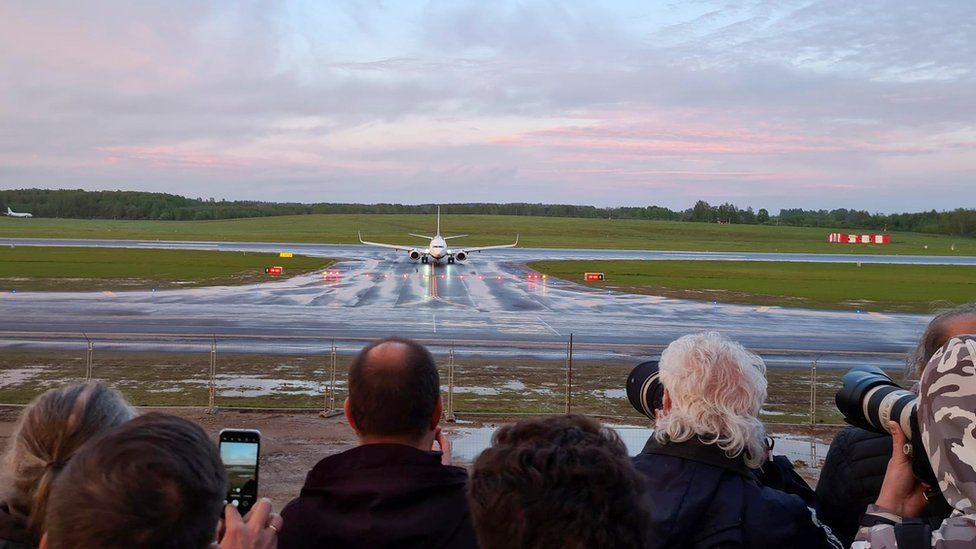

Belarus plane: What happens with a military jet interception?

Belarus scrambled a fighter jet to divert a Ryanair passenger plane - flying from Greece, bound for Lithuania - to land in Minsk on Sunday, claiming a bomb was on board. None was found.
Police then took opposition journalist Roman Protasevich away when the plane landed in the Belarus capital. It was an airport that the pilots did not have on their flight plans.
Those within aviation called this a "major diplomatic incident", so serious that those we spoke to cannot remember anything similar.
Belarus plane: Who is dissident Roman Protasevich?
What action can the EU take?
When an aircraft flies through international skies, aircraft have the nationality of the state in which they are registered.
In this case, the Ryanair plane is understood to be registered in Poland to "Ryanair Sun", a subsidiary of the Irish airline. When the plane is flying, regardless of its position in the skies, it remains of Polish nationality.
ADVERTISEMENT
"To interfere with an aircraft in flight is a diplomatic incident involving the state of registration," said a senior industry source from a major aviation business.
A pilot added that "this is a huge contravention of so many international agreements".
The law allowing planes to overfly countries without the need to land is the "First Freedom of the Air" and these freedoms of the air are essential to enable passengers and traffic to move from one country to another around the world.
The decision by Belarus to intercept a passenger aircraft in the air and force it to land in a third country breaks this code. It's for this reason the boss of Ryanair, Michael O'Leary, has described the situation as "state sponsored piracy".
But Belarus has not signed the International Air Services Transit Agreement, which is what embodies the "First Freedom of the Air" and a list of other codes.
When can a military intercept happen?
A military escort or interception happens primarily for safety reasons, according to aviation experts. If passengers on board the flight, and those in towns and cities on the ground, are at risk then states will respond to protect accordingly.
If Air Traffic Control (ATC) temporarily loses radio contact with an aircraft, operators will immediately work to re-establish radio communication. But if that doesn't happen and the flight deck crew fails to respond on its two frequencies, the military can be deployed.
"The fighter comes to attract your attention and [get you to] call in - and to make sure you've not been hijacked and about to crash into a capital city. ATC is very nervous when radio goes silent with aircraft after 9/11"," explained one pilot.
Alternatively, if a captain calls over the radio with one of a number of "squawk codes" to signal that the aircraft is in distress, a military escort can also be deployed. There are a number of scenarios in which one of these codes might be used - including a mechanical emergency, a loss of communications or a discreet way to tell ATC you've been subject to unlawful interference.
map
1px transparent line
What happens during a military escort?
If military jets are scrambled to escort a plane in the sky, the jets take up formation ahead of the passenger aircraft.
"The captain sits on the left-hand side of the aircraft. You'll have a jet who'll pull up on the left-hand side so there is a clear line of sight for the captain," says one senior industry source. He adds if there is a second jet, they might take a position on the right-hand side or behind the plane.
At this point, the military jets will be trying to contact the passenger aircraft on an International Emergency Frequency. In the event that there are no comms because radios have failed, there is a booklet of interception signals which are manoeuvres that determine what you have to do.
"They flash their lights at night. By day they rock their wings which means follow me, and you have to follow," explains the pilot.
On Monday, private Facebook groups for pilots were alive with discussion about the interception, with many talking about criticisms levelled at pilots for following the military jets to Minsk instead of continuing to Lithuania.
"If a military aircraft intercepts you - and gives you command - you obey. You can't not obey command. You have no option but to follow orders. It's like on the ground, when police tell you to do something," the pilot added.
Distress for the pilots, crew and passengers
Every flight has a flight plan that is filed with Eurocontrol. This has everything from lift-off at runway one, involving all elements of the route and flight and right through to touch-down at runway two. But interception means that plan can be almost wiped out.
"Pilots would then be extremely worried. They don't know why and what's happening. Where are we going to? What's the airport like? What is the weather like? We don't have approach plates for it; these would be some of my worries," added the pilot from a major UK airline.
The problem is that in interception scenarios like this one, the pilots may not be thoroughly prepared for the flight path they may be asked to follow and therefore there can be a higher degree of risk for all.
"You are thrown into what's happening, you no longer have control of the flight plan and the full safety oversight that comes with that," explained one senior industry source, adding "without knowing the plan your situational awareness is degraded, as is the ability to plan your own flight path to a safe touch down."
UK flights have now been asked to avoid Belarusian airspace in the wake of the plane diversion.
UK Transport Secretary Grant Shapps tweeted on Monday that he had instructed the Civil Aviation Authority to request airlines to make the move "in order to keep passengers safe". The operating permit for the Belarusian national airline Belavia has also been suspended.
Passengers describe panic on plane
Why wearing the wrong socks is risky in Belarus
How messenger app bypassed Belarus news blackout
Many details are still to emerge, including a detailed time line of events from the sky above Belarus on Sunday morning. But for one airline, two passengers and an entire continent, a major diplomatic incident is now developing.
Due to the diplomatic and security situation regarding this flight incident, aviation industry figures did not want to be named for this article.
2px presentational grey line
Belarus: The basics
Where is Belarus? It has its ally Russia to the east and Ukraine to the south. To the north and west lie EU and Nato members Latvia, Lithuania and Poland.
Why does it matter? Like Ukraine, this nation of 9.5 million is caught in rivalry between the West and Russia. President Lukashenko has been nicknamed "Europe's last dictator" - he has been in power for 27 years.
What's going on there? There is a huge opposition movement demanding new, democratic leadership and economic reform. The opposition movement and Western governments say Mr Lukashenko rigged the 9 August election. Officially he won by a landslide. A huge police crackdown has curbed street protests and sent opposition leaders to prison or into exile.